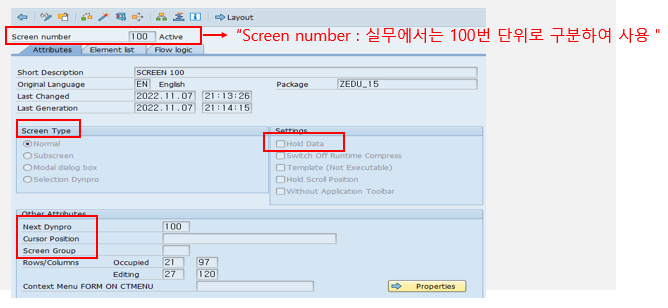

20221110 - MODULE POOL
What is the Module Pool?
ABAP 프로그램은 Type 1 (executable programs), M (module pool), F (function)으로 구현
Type 1과 M의 가장 큰 차이는?
- REPORT PROGRAM은 프로그램이 자동으로 생성해주는 1000번 스크린 (SELECTION SCREEN)을 사용하지만, Type M (온라인 프로그램)은 개발자가 직접 생성한 일반 스크린 사용
즉, Type 1 레포트 프로그램은 데이터베이스 테이블에서 조회한 데이터를 화면에 뿌려주는 데 목적이 있고, module pool은 데이터를 조회, 수정, 삭제, 생성하는 데이터 관리의 목적
What is the SCREEN in SAP?
SAP SCREEN은 SAP GUI에 조회되는 모든 화면을 의미하며, 스크린은 사용자와 상호 작용을 통해 데이터를 생성하고 조회하는 작업 영역
SCREEN 구성요소
- 스크린 속성
- 스크린 요소
- 스크린 필드
- 스크린 흐름 로직
스크린 속성
스크린 번호, 타입, 이름, 내역, 창 크기 정의 후 SAP 시스템에 스크린 오브젝트 연결

Screen Number
프로그램 내부에서 스크린을 구별하는 4자리 숫자
일반적으로 0100, 0200, 0300 연속적으로 사용

Screen type
일반적으로 normal 선택
Normal
스크린이 전체 GUI 창을 점유하는 스크린
Subscreen
Subscreen 영역 안에서 사용하는 스크린
Modal dialog box
팝업창의 형태로 GUI 창의 한 부분을 사용

Next screen
호출한 스크린의 PAI가 실행된 후 다음에 실행되는 스크린 번호 지정
만약 호출한 프로그램이 없다면 트랜잭션은 종료하며 Next Screen에 0 또는 SPACE로 설정하면 프로그램 종료 시 이전의 프로그램으로 복귀

Screen group
스크린이 실행되고 있는 동안 시스템 변수 SY-DYNGR에 저장
여러 개의 스크린을 화면 그룹 하나로 지정하여 화면 속성을 변경

Hold data
사용자 프로파일에 저장된 데이터를 스크린 기본 값으로 설정
통상적으로 세션이 종료될 때까지 유효
- ABAP Memory 영역에 있는 데이터를 사용하지 않고 사용자 프로파일에 저장된 정보를 기본 값으로 사용하고자 할 때 체크

스크린 구성
INPUT / OUTPUT 필드와 같은 구성 요소들을 가지고 좀 더 다양하게 화면 구성

화면 레이아웃
Toolbar 기능을 이용하여 자유롭게, 편리하게 디자인

Custom control
GUI control을 보여주는 영역으로 ALV CLASS에서 사용

스크린 필드
스크린의 작업 영역 메모리에 존재하는 필드
스크린 구성 요소인 필드는 실행 시점에 어떠한 값을 가지게 될지 모르는 정적인 상태지만, 스크린 필드는 사용자가 입력한 값을 받아 메모리에 저장하고 스크린의 필드에 값을 DISPLAY (=dynpros, dynamic program)
스크린 필드는 스크린 작업 영역(메모리)에 존재하는 필드로서 PAI 이벤트가 발생하기 전 시점에 ABAP 프로그램에 있는 같은 이름을 가진 필드로 값 전달(복사)
또한, PBO 이벤트가 종료되는 시점에 다시 ABAP 프로그램에 있는 같은 이름을 가진 필드로부터 값 복사 → 이렇게 값 전달이 이루어지기 위해 유일한 변수 필요: OK_CODE
MODULE POOL에는 여러 개의 스크린이 존재할 수 있고, 각각의 스크린에 OK_CODE 지정

스크린 흐름 로직
SCREEN FLOW Logic PBO와 PAI 이벤트로 구성
PBO (Process Before Output)
스크린이 화면에 보여지기 전에 실행 화면이 처음 실행되면 PBO 실행되고 화면에서 사용자가 이벤트를 발생시키면 PAI 수행 후 다시 PBO 실행
- 즉, PAI 이벤트 실행 후 PBO 실행으로 스크린 조회
PAI (Process After Input)
스크린 상에서 USER 액션이 발생한 후 실행
사용자가 버튼을 클릭하는 액션을 수행하였을 때 발생하는 이벤트 블록
PAI 이벤트가 실행된 후 다음 스크린의 PBO 이벤트를 호출
스크린 흐름 로직

USER 액션
사용자는 스크린 상에서 INPUT 필드에 값을 넣거나 변경
PAI 이벤트를 호출 시키기 위해서는
- function code가 할당된 Application Toolbar에 있는 Function 선택
- Element list에서 OK_CODE 필드가 존재하고, ABAP 프로그램에서 OK_CODE의 변수가 존재한다면, 사용자가 function을 선택했을 때, 그에 할당된 Function CODE가 OK_CODE 변수에 복사
- 만약 OK_CODE가 설정되지 않은 상태에서 PAI 이벤트가 실행되면 Function code의 값을 채워줄 스크린 필드가 존재하지 않기 때문에 프로그램에서 PAI에 해당하는 작업 수행 불가
INCLUDE
ABAP 소스코드를 개별 저장소 개체로 분할
- Library (모듈화)
- INCLUDE 프로그램은 같은 소스코드를 다른 프로그램에서 사용
- Order (순서, 가독성)
- INCLUDE 프로그램은 복잡한 프로그램을 순서대로 정렬하여 뛰어난 가독성 제공
특징
INCLUDE는 하나의 프로그램이지만 독립적으로 실행 불가
INCLUDE 프로그램은 다른 프로그램 내에 내장 (Built in)
INCLUDE 프로그램은 또 다른 INCLUDE를 포함 가능
INCLUDE 프로그램은 자기 자신을 호출 불가
INCLUDE 프로그램은 PARAMETER를 가지지 않는다.
INCLUDE는 보통 프로그램 이름 뒤에 데이터 선언부, SELECTION-SCREEN부, SUBROUTINE부, PBO, PAI로 나누어 관리의 편의성 증대
INCLUDE ZPROGRAM_TOP
INCLUDE ZPROGRAM_SCR
INCLUDE ZPROGRAM_F01
INCLUDE ZPROGRAM_PBO
INCLUDE ZPROGRAM_PAI